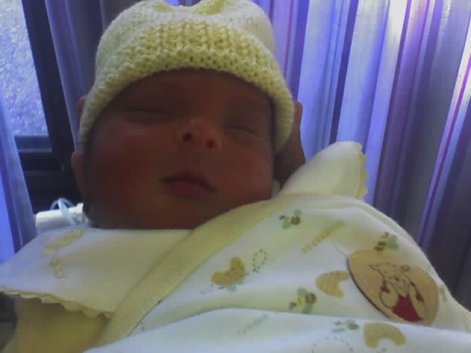
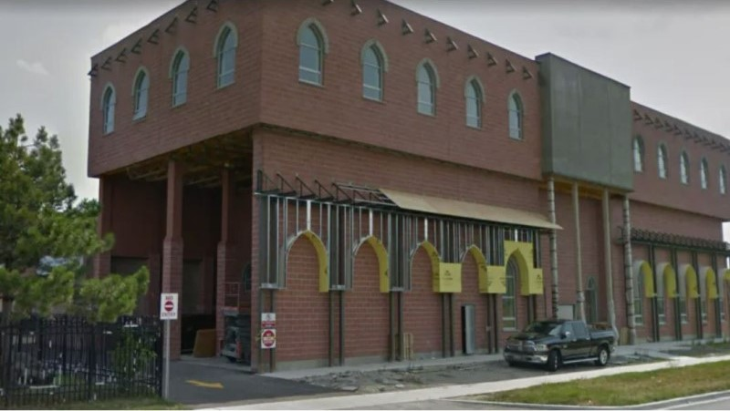

It all began on the night of Wednesday, May 17th, 2006. It was 11:56 PM in Trillium HealthCare Centre, Mississauga, Ontario, Canada. I was born, and my father named me Fatima.
When the September of 2006 came, my mother and I travelled to Houston, Texas, USA to live with my uncle. This is where I first met my cousin, who was only a month old at the time.
I celebrated my first birthday in Texas.
I returned to Canada and began living in Toronto, Ontario, Canada with my parents and beloved older brother.
I began going to school! I attended Thorncliffe Park Public School, which was my home elementary school, for one year. I spent Junior Kindegarten here.
I changed schools. Starting from Senior Kindergarten, I attended Islamic Foundation School. This was a religious private school, and I went there for 9 years! While I did not particularly enjoy my time there, it was a significant experience and a big part of my upbringing. A lot happened during this time.
The elementary school building was a mosque, also known as the Islamic Foundation of Toronto and had many services, the academic program being one of them.
Next to the elementary school building was the middle and high school building. This was exclusively for the academic program. By the time I went, the highschool had shut down so the highest grade was the 8th grade, up until which I attended the school.
The start of my highschool experience. I am now attending Victoria Park Collegiate Institute. So far, I am thoroughly enjoying my time here. I made some incredible friends who I admire and appreciate tremendously. I also learned a lot about a lot, and I'm excited to see what happens from here on out!